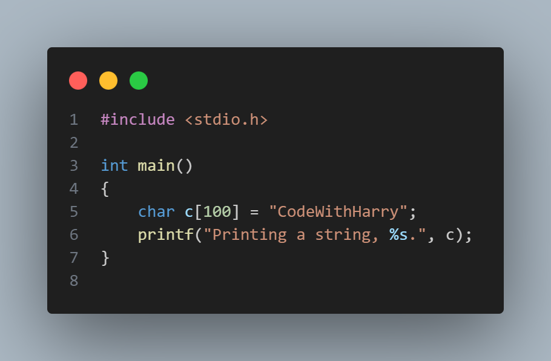
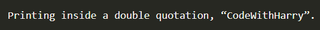
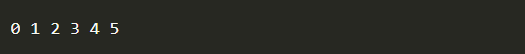

Introduction to C
C Overview
What is C?
Why should we learn C/ Features of C?
How is it different from C++?
Getting Started with C
Requirements before you start
What is an IDE?
Installing VSCode
What is a Compiler?
Setting up the compiler
Setting Path for Compiler
Basic Structure & Syntax
Programming in C involves following a basic structure throughout. Here’s what it can be broken down to.
Pre-processor commands
Pre-processor commands are commands which tell our program that before its execution, it must include the file name mentioned in it because we are using some of the commands or codes from this file. They add functionalities to a program. One example could be,
We include math.h to be able to use some special functions like power and absolute. #include
Detailed explanations of everything else in the structure will follow in the later part of
the tutorial.
Header files:
Syntax
An example below shows how a basic C program is written.
A C program is made up of different tokens combined. These tokens include:
Keywords
Keywords are reserved words that can not be used elsewhere in the program for naming a variable or a
function. They have a specific function or task and they are solely used for that. Their
functionalities are pre-defined.
One such example of a keyword could be return which is used to build return statements for
functions. Other examples are auto, if, default, etc.
Whenever we write any keyword in IDE their colour slightly changes and it looks different from other
variables or functions for example in turbo c all keywords are turns into white colour .
Identifiers
Identifiers are names given to variables or functions to differentiate them from one another. Their
definitions are solely based on our choice but there are a few rules that we have to follow while
naming identifiers. One such rule says that the name can not contain special symbols such as @, -,
*, <, etc.
C is a case-sensitive language so an identifier containing a capital letter and another one
containing a small letter in the same place will be different. For example, the three words:
Code, code, and cOde can be used as three different identifiers.
Constants
Constants are very similar to a variable and they can also be of any data type. The only difference between a constant and a variable is that a constant’s value never changes. We will see constants in more detail in the upcoming tutorial.
String Literal
String literals or string constants are a sequence of characters enclosed in double quotation marks. For example, “This is a string literal!” is a string literal. C method printf() utilizes the same to format the output.
C Comments
Comments can be used to insert any informative piece which a programmer does not wish to be executed.
It could be either to explain a piece of code or to make it more readable. In addition, it can be
used to prevent the execution of alternative code when the process of debugging is done.
Comments can be singled-lined or multi-lined.
Single Line Comments
An example of how we use a single-line comment
Multi-line comments
An example of how we use a multi-line comment
C Variables
Variables are containers for storing data values.
In C, there are different types of variables.For example
Declaration
We cannot declare a variable without specifying its data type. The data type of a variable depends on what we want to store in the variable and how much space we want it to hold. The syntax for declaring a variable is simple:
OR
Naming a Variable
There is no limit to what we can call a variable. Yet there are specific rules we must follow while naming a variable:
A variable, as its name is defined, can be altered, or its value can be changed, but the same is not true for its type. If a variable is of integer type, then it will only store an integer value through a program. We cannot assign a character type value to an integer variable. We can not even store a decimal value into an integer variable.
C Data Types, Operators & User I/O
As explained previously, a variable in C must be a specified data type, and you must use a format specifier inside the printf function to display the value present in the variable The data type specifies the size and type of information the variable will store.
Datatype
It is the type of value which the variable holds. Here, we will focus on the most basic ones:
| Data Type | Size | Description | Format Specifier |
|---|---|---|---|
| int | 2 or 4 bytes | Stores whole numbers, without decimals | %d or %i |
| float | 4 bytes | Stores fractional numbers, containing one or more decimals. Sufficient for storing 7 decimal digits | %f |
| double | 8 bytes | Stores fractional numbers, containing one or more decimals. Sufficient for storing 15 decimal digits | %lf |
| char | 1 byte | Stores a single character/letter/number, or ASCII values | %c |
Below are some sub datatypes
| Data Type | Size | Description | Format Specifier |
|---|---|---|---|
| short int | 2 bytes | Stores whole numbers, without decimals | %sd |
| long int | 4 bytes | Stores fractional numbers, containing one or more decimals. Sufficient for storing 7 decimal digits | %ld |
| unsigned short int | 8 bytes | Stores fractional numbers, containing one or more decimals. Sufficient for storing 15 decimal digits | %usd |
| unsigned long int | 4 bytes | Stores a single character/letter/number, or ASCII values | %uld |
Here’s how we make use of the data type of a variable to print it.
Output
26
39.320000
A
C Constants
Here’s an example of how we declare a constant.

C Operators
Special symbols that are used to perform actions or operations are known as operators. They could be both unary or binary. For example, the symbol asterisk (*) is used to perform multiplication in C so it is an operator and it is a binary operator. This section covers all types of operators.
Arithmetic Operators
Arithmetic operators are used to perform mathematical operations such as addition, subtraction, etc. A few of the simple arithmetic operators are
| Operator | Description |
|---|---|
| + | Addition |
| - | Subtraction |
| * | Multiplication |
| / | Division |
| % | Modulus |
We all must already know their purpose and how they are used in simple mathematics. Their purpose and functionality are the same. Modulus(%) operator- this operator returns the remainder of two operands when they are been divided
Let’s see their implementation in C.
Outputa + b = 5
Relational Operators
Relational operators are used for the comparison between two or more numbers or even expressions in cases. Same as Java, C also has six relational operators and their return value is of a Boolean type that is, either True or False (1 or 0).
| Operator | Description |
|---|---|
| > | Greater than |
| < | Less than |
| >= | Greater than or equal to |
| <= | Less than or equal to |
| == | Is equal to |
| != | Is not equal to |
Let’s see their implementation in C.
Outputa == b = 0
The output is 0, since a and b are not equal.
Logical Operators
There are three logical operators i.e. AND, OR, and NOT. They can be used to compare Boolean values but are mostly used to compare conditions to see whether they are satisfying or not.
| Operator | Description |
|---|---|
| && | AND Operator |
| || | OR Operator |
| ! | NOT Operator |
Let’s see their implementation in C.
Outputa or b = 1
The output is 1, since either a or b is not equal to zero.
Bitwise Operators
A bitwise operator is used to performing operations at the bit level. To obtain the results, they convert our input values into binary format and then process them using whatever operator they are being used with.
| Operator | Description |
|---|---|
| & | Bitwise AND |
| | | Bitwise OR |
| ^ | Bitwise XOR |
| ~ | Bitwise Complement |
| >> | Shift Right Operator |
| << | Shift Left Operator |
Let’s see their implementation in C.
The output is 1, since a xor b is 01 in binary, which is 1 in decimal.
Assignment Operators
Assignment operators are used to assign values. We will use them in almost every program we develop.
int a = 0;int b = 1;
Equal to (=) is the assignment operator here. It is assigning 0 to a and 1 to b in the above example.
| Operator | Description |
|---|---|
| = | It assigns the right side operand value to the left side operand. |
| += | It adds the right operand to the left operand and assigns the result to the left operand. |
| -= | It subtracts the right operand from the left operand and assigns the result to the left operand. |
| *= | It multiplies the right operand with the left operand and assigns the result to the left operand. |
| /= | It divides the left operand with the right operand and assigns the result to the left operand. |
Format Specifiers & Escape Sequences
Whenever we write a program in C, we have to use format specifiers to define the variable type in input and output and escape characters to format the output.
Format Specifiers
A format specifier in C programming is used to define the type of data we are printing to the output or accepting through the input. Through this, we tell the compiler what type of variable we are using for input while using scanf() or output while using printf(). Some examples of format specifiers are %d, %c, %f, etc.
Here is a list of almost all format specifiers
| Format Specifier | Type |
|---|---|
| %c | Used to print a character |
| %d | Used to print the signed integer |
| %f | Used to print the float values |
| %i | Used to print the unsigned integer |
| %l | Used to print the long integer |
| %lf | Used to print the double values |
| %lu | Used to print the unsigned integer or unsigned long integer |
| %s | Used to print the string |
| %u | Used to print the unsigned integer |
One example is shown below.  Output
The %s used in the printf( ) is a format specifier. This format specifier tells printf( ) to consider it as a string and print accordingly.
Escape Sequences
Many programming languages support the concept of Escape Sequences. An escape sequence is a sequence of characters that are used in formatting the output. They are not displayed on the screen while printing. Each character has its specific function. For example, \t is used to insert a tab, and \n is used to add a new line.
Here’s the list of all escape sequences
| Escape Sequence | Description |
|---|---|
| \t | Inserts a tab space |
| \b | Inserts a backspace |
| \n | Inserts a new line |
| \’’ | Inserts a double quote character |
| \r | Inserts a form feed |
| \f | Inserts a backspace |
| \’ | Inserts a single quote character |
| \\ | Inserts a backslash character |
One example is shown below,
Output 
User Input/Output
We have already learned how the printf() function is used to output values in C. Another method, which goes by the name, scanf(), is used to get user input.
The scanf() function takes two arguments:
Syntax
scanf("format specifier",&variable_name);
&-specifes the address of the variable.
One such example demonstrates how a program takes input from the user.
Input
Output
You must note that we didn’t have to specify the reference operator (&) in cases of strings if we have specified the size of the strings already. This is an exception.
Conditional Statements
C if...else statements
Sometimes, we wish to execute one set of instructions if a particular condition is met, and another set of instructions if it is not. This kind of situation is dealt with in C language using a decision control system.
The condition for the if statement is always enclosed within a pair of parentheses. If the condition is true, then the set of statements following the if statement will execute. And if the condition evaluates to false, then the statement will not execute, instead, the program skips that enclosed part of the code.
An expression in if statements are defined using relational operators. Comparing two values using relational operators allows us to determine whether they are equal, unequal, greater than, or less than.
If we want to execute a particular code in some situation and its vice versa /opposite/or different code if that situation doesn’t occurs then if..else statements can be used. Its all depend on the condition. If the condition returns true value the situation has occurred and the true part of code will be executed and if condition returns false value false part of the code will be executed
| Condition | Meaning |
|---|---|
| a==b | a is equal to b |
| a!=b | a is not equal to b |
a<b| a is less than b |
|
| a>b | a is greater than b |
| a<=b | a is less than or equal to b |
| a>=b | a is greater than or equal to b |
The statement written in an if block will execute when the expression following if evaluates to true. But when the if block is followed by an else block, then when the condition written in the if block turns to be false, the set of statements in the else block will execute. Following is thesyntax of if-else statements:
One example where we could use the if-else statement is:
 Output
Output
Ladder if-else
If we want to check the multiple conditions then ladder if else can used. If the previous condition returns false then only next condition will be checked.
syntax-
Nested if-else
We can also write an entire if-else statement within either the body of another if statement or the body of an else statement. This is called the ‘nesting’ of ifs.
Switch Case Statements
What is Switch?
The control statement that allows us to make a decision effectively from the number of choices is called a switch, or a switch case-default since these three keywords go together to make up the control statement. The expression in switch returns an integral value, which is then compared with different cases. Switch executes that block of code, which matches the case value. If the value does not match with any of the cases, then the default block is executed.
Following is the syntax of switch case-default statements:
Understanding the syntax:
The expression following the switch can be an integer expression or a character expression. The case value 1, and 2 are case labels that are used to identify each case individually. Remember, that case labels should be unique for each of the cases. If it is the same, it may create a problem while executing a program. At the end of the case labels, we always use a colon ( : ). Each case is associated with a block. A block contains multiple statements that are grouped together for a particular case.
Whenever the switch is executed, the value of test-expression is compared with all the cases present in switch statements. When the case is found, the block of statements associated with that particular case will execute. The break keyword indicates the end of a particular case. If we do not put the break in each case, then even though the specific case is executed, C's switch will continue to execute all the cases until the end is reached. The default case is optional. Whenever the expression's value is not matched with any of the cases inside the switch, then the default case will be executed.
One example where we could use the switch case statement is,
OutputDifferent to if-else. How?
There is one problem with the if statement: the program's complexity increases whenever the number of if statements increases. If we use multiple if-else statements in the program, the code might become difficult to read and comprehend. Sometimes it also even confuses the developer who himself wrote the program. Using the switch statement is the solution to this problem. Furthermore,
Rules for Switch statements
It is not necessary to use the break keyword after every case. Break keywords should only be used when we want to terminate our case at that time, otherwise we won’t.
We can also use nested switch statements i.e., switch inside another switch. Also, the case constants of the inner and outer switch may have common values without any conflicts.
Iteration Statements
C Loops
In programming, we often have to perform an action, again and again, with little or no variations in the details each time they are executed. This need is met by a mechanism known as a loop. The versatility of the computer lies in its ability to perform the set of instructions repeatedly. This involves repeating some code in the program, either a specified number of times or until a particular condition is satisfied. Loop-controlled instructions are used to perform this repetitive operation efficiently ensuring the program doesn’t look redundant at the same time due to the repetitions.
Following are the three types of loops in C programming.
Types of Loops
Entry Controlled loops
In entry controlled loops, the test condition is evaluated before entering the loop body. The for Loop and the while Loop are examples of entry-controlled loops.
Exit Controlled LoopsIn exit-controlled loops, the test condition is tested at the end of the loop. Regardless of whether the test condition is true or false, the loop body will execute at least once. The do-while loop is an example of an exit-controlled loop.
For Loop
A for loop is a repetition control structure that allows us to efficiently write a loop that will execute a specific number of times. The for loop working is as follows:
While loop
While loop is called a pre-tested loop. The while loop allows code to be executed multiple times, depending upon a boolean condition that is given as a test expression. While introducing for loops, we saw that the number of iterations is known, whereas while loops are used in situations where we do not know the exact number of iterations of the loop. The while loop execution is terminated based on the test condition which evaluates to either true or false.
do-while loop
In do-while loops, the execution is terminated based on the test condition, very similar to how it is done in a while loop. The main difference between the do-while loop and while loop is that, in the do-while loop, the condition is tested at the end of the loop body, whereas the other two loops are entry-controlled. In a do-while loop, the loop body will execute at least once irrespective of the test condition.
Sometimes, while executing a loop, it becomes necessary to jump out of the loop. For this, we make use of the break statement and the continue statement.
break statement
Whenever a break statement is encountered in a loop, the loop is terminated regardless of what kind of loop we are in and the program continues with the statement following the loop.
continue statement
Whenever a continue statement is encountered in a loop, it will cause the control to go directly to the test condition which is where the loop starts, ignoring any piece of code following the continue statement.
while Loop
A While loop is also called a pre-tested loop. A while loop allows a piece of code in a program to be executed multiple times, depending upon a given test condition which evaluates to either true or false. The while loop is mostly used in cases where the number of iterations is not known. If the number of iterations is known, then we could also use a for loop.
The syntax for using a while loop,
The body of a while loop can contain a single statement or a block of statements. The test condition may be any expression that should evaluate as either true or false. The loop iterates while the test condition evaluates to true.When the condition becomes false, the program control passes to the line immediately following the loop, which means, it terminates.
One such example to demonstrate how a while loop works is,
OutputProperties of the while loop:
Following are some of the properties of the while loop.
do-while Loop
A do-while loop is a little different from a normal while loop. A do-while loop, unlike what happens in a while loop, executes the statements inside the body of the loop before checking the test condition.
So even if a condition is false in the first place, the do-while loop would have already run once. A do-while loop is very much similar to a while loop, except for the fact that it is guaranteed to execute the body at least once.
Unlike for and while loops, which test the loop condition first, then execute the code written inside the body of the loop, the do-while loop checks its condition at the end of the loop.
Following is the syntax of the do-while loop.>
If the test condition returns true, the flow of control jumps back up to the do part, and the set of statements in the loop executes again. This process repeats until the given test condition becomes false.
How does the do-while loop work?
One such example to demonstrate how a do-while loop works is
OutputAs it was already mentioned at the beginning of this tutorial, a do-while loop runs for at least once even if the test condition returns false, because the test condition is evaluated only after the first execution of the instructions in the body of the loop.
Difference between a while and a do-while loop
A While loop is executed every time the given test condition returns true, whereas, a do-while loop is executed for the first time irrespective of the test condition being true or false because the test condition is checked only after executing the loop for the first time.
for Loop
The "For" loop is used to repeat a specific piece of code in a program until a specific condition is satisfied. The for loop statement is very specialized. We use a for loop when we already know the number of iterations of that particular piece of code we wish to execute. Although, when we do not know about the number of iterations, we use a while loop.
Here is the syntax of a for loop in C programming. Here,
One such example to demonstrate how a for loop works is,
OutputWhy for loops if we already have while loops?
It is clear to a developer exactly how many times the loop will execute. So, if the developer has to dry run the code, it will become easier.
C Break/Continue
Break Statement
One such example to demonstrate how a break statement works is,
Output Here, when i became 6, the break statement got executed and the program came out of the while loop.
Continue Statement
One such example to demonstrate how a continue statement works is
Output
Here, the continue statement was continuously executing while i remained less than 5. For all the other values of i, we got the print statement working.
Array Basics
An array is a collection of data items of the same data type. And it is also known as a subscript variable.
Dimensions of an array
Some texts refer to one-dimensional arrays as vectors and two-dimensional arrays as matrices and use the general term arrays when the number of dimensions is unspecified or unimportant.
How do Arrays help?
Programs that use arrays for managing a large number of the same data type variables are more organized and readable in comparison to creating different variables of the same type for each data element.
Arrays allow us to create many variables by just a single line. It means there is no need to create or specify every variable.
Advantages of Arrays?
Properties of Arrays
Array Operations
Defining an array
1. Without specifying the size of the array
int arr[] = {1, 2, 3};
Here, we can leave the square brackets empty, although the array cannot be left empty in this case. It must have elements in it.
2. With specifying the size of the array
int arr[3];
arr[0] = 1, arr[1] = 2, arr[2] = 3;
Here, we can specify the size of the array in its definition itself. We can then put array elements later as well.
Accessing an array element
An element in an array can easily be accessed through its index number. This must be remembered that the index number starts from 0 and not one.
Example
#include
int main()
{
int arr[] = {1, 5, 7, 2};
printf("%d ", arr[2]); //printing element on index 2
}
7
Changing an array element
An element in an array can be overwritten using its index number.
Example:
#include
int main()
{
int arr[] = {1, 5, 7, 2};
arr[2] = 8; //changing the element on index 2
printf("%d ", arr[2]); //printing element on index 2
}
8
String Basics
What are Strings?
A string is an array of characters. Data of the same type are stored in an array, for example, integers can be stored in an integer array, similarly, a group of characters can be stored in a character array. This character array is also known as strings. A string is a one-dimensional array of characters that is terminated by a null (‘\0’).
Declaration of Strings:
Declaring a string is very simple, the same as declaring a one-dimensional array. It’s just that we are considering it as an array of characters.
Below is the syntax for declaring a string.
char string_name[string_size];
In the above syntax, string_name is any name given to the string variable, and size is used to define the length of the string, i.e the number of characters that the strings will store. Keep in mind that there is an extra terminating character which is the null character (‘\0’) that is used to indicate the termination of the string.
Example of String
#include
int main()
{
// declare and initialise string
char str[] = "Sandeep Ray";
printf("%s", str);
return 0;
}
Sandeep Rai
String Functions
We can use C's string handling library functions to handle strings. The string.h library is used to perform string operations. It provides several functions for manipulating strings.
Following are some commonly used string handling functions:
1. strcat():
This function is used to concatenate the source string to the end of the target string. This function expects two parameters, first, the base address of the source string and then the base address of the target string. For example, “Hello” and “World” on concatenation would result in a string “HelloWorld”.
Here is how we can use the strcat( ) function:
#include <stdio.h>
#include <string.h>
int main()
{
char s[] = "Hello";
char t[] = "World";
strcat(s, t);
printf("String = %s", s);
}
String = HelloWorld;
2. strlen():
This function is used to count the number of characters present in a string.
Here is how we can use the strlen( ) function:
#include <stdio.h>
#include <string.h>
int main()
{
char s[] = "Hello";
int len = strlen(s);
printf("Length = %d", len);
}
Length = 5
3. strcpy():
This function is used to copy the contents of one string into the other. This function expects two parameters, first, the base address of the source string and then the base address of the target string.
Here is how we can use the strcpy( ) function:
#include <stdio.h>
#include <string.h>
int main()
{
char s[] = "CodeWithHarry";
char t[50];
strcpy(t, s);
printf("Source string = %s\n", s);
printf("Target string = %s", t);
}
Source string = CodeWithHarry
Target string = CodeWithHarry
4. strcmp():
The strcmp() function is used to compare two strings to find out whether they are the same or different. It takes two strings as two of its parameter. It will compare two strings, character by character until there is a mismatch or the iterator reaches the end of one of the strings.
If both of the strings are identical, strcmp( ) returns a value of zero. If they are not identical, it will return a value less than zero, considering the ASCII value of the mismatched character in the first string is less than the mismatched character in the second string. Else, it will return a value greater than 0.
Here is how we can use the strcmp( ) function:
#include <stdio.h>
#include <string.h>
int main()
{
char s[] = "Hello";
char t[] = "World";
int cmp = strcmp(s, t);
printf("Comparison result = %d", cmp);
}
Comparison result = -1
5. strrev():
This function is used to return the reverse of the string.
Here is how we can use the strrev( ) function:
#include <stdio.h>
#include <string.h>
int main()
{
char s[] = "Hello";
printf("Reversed string = %s", strrev(s));
}
Reversed string = olleH
Function Basics
Functions:
A function is nothing but a group of code put together and given a name and it can be called anytime without writing the whole code again and again in a program.
I know its syntax is a bit difficult to understand but don’t worry after reading this whole information about Functions you will know each and every term or thing related to Functions.
Advantages of Functions
Aspects of a function
1. DeclarationThis is where a function is declared to tell the compiler about its existence.
2. Definition
A function is defined to get some task executed. (It means when we define a function, we write the whole code of that function and this is where the actual implementation of the function is done.)
3. Call
This is where a function is called in order to be used.
Types of functions
1. Library Function:-Library functions are pre-defined functions in C Language. These are the functions that are included in C header files prior to any other part of the code in order to be used. E.g. printf(), scanf(), etc.
2. User-defined functions
User-defined functions are functions created by the programmer for the reduction of the complexity of a program. Rather, these are functions that the user creates as per the requirements of a program.
E.g. Any function created by the programmer.
Function Parameters
A parameter or an argument of a function is the information we wish to pass to the function when it is called to be executed. Parameters act as variables inside the function. Parameters are specified after the function name, inside the parentheses. You can add as many parameters as you want, just separate them with a comma.
Here’s the basic syntax of a function
return_type functionName(parameter1, parameter2) {
// body of the function
}
What is the return_type?
Return type specifies the data type the function should return after its execution. It could also be a void where the function is required to return nothing.
Different ways to define a function
1. Without arguments and without return valueIn this function we don’t have to give any value to the function (argument/parameters) and even don’t have to take any value from it in return.
One example of such functions could be,
#include <stdio.h>
void func()
{
printf("This function doesn't return anything.");
}
int main()
{
func();
}
This function doesn’t return anything.
2. Without arguments and with the return value.
In these types of functions, we don’t have to give any value or argument to the function but in return, we get something from it i.e. some value.
One example of such functions could be,
#include <stdio.h>
int func()
{
int a, b;
scanf("%d", &a);
scanf("%d", &b);
return a + b;
}
int main()
{
int ans = func();
printf("%d", ans);
}
5
6
11
The function func when called, asks for two integer inputs and returns the sum of them. The function’s return type is an integer.
3. With arguments and without a return value.
In this type of function, we give arguments or parameters to the function but we don’t get any value from it in return.
One example of such functions could be,
#include <stdio.h>
void func(int a, int b)
{
printf("%d", a * b);
}
int main()
{
func(2, 3);
}
6
The function’s return type is void. And it takes two integers as its parameters and prints the product of them while returning nothing.
4. With arguments and with the return valueIn these functions, we give arguments to a function and in return, we also get some value from it.
One example of such functions could be,
#include <stdio.h>
int func(int a, int b)
{
return a + b;
}
int main()
{
int ans = func(2, 3);
printf("%d", ans);
}
5
The function func takes two integers as its parameters and return an integer which is their sum.
Make sure the return statement and the return_type of the functions are the same.